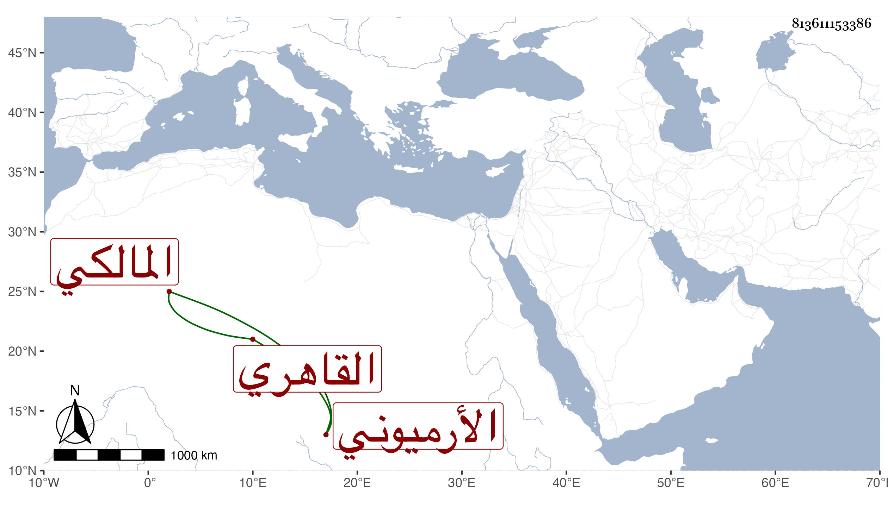

0902Sakhawi.DawLamic.ITO20230111-ara1.EIS1600.813611153386
Biography ID: 813611153386
271
محمد بن عبد الله أبو الخير الأرميوني ثم القاهري المالكي المذكور بالشرف وهو بكنيته أشهر ، وأرميون بالغربية حفظ القرآن واشتغل في الفقه والنحو والأصلين وبرع في النحو وشارك في غيرها ومن شيوخه السنهوري والشمني والحصني ولازمه والعلاء الحصني ومحمد الطنتدائي الضرير . مات سنة إحدى وسبعين ولم يبلغ الثلاثين ، وكان خيرا ، وبلغني عنه أنه كان يقول : لا ينشرح صدري للبس شظفة الشرف ، لتوقفه في ذلك رحمه الله .
